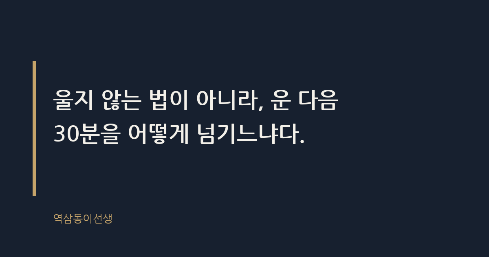
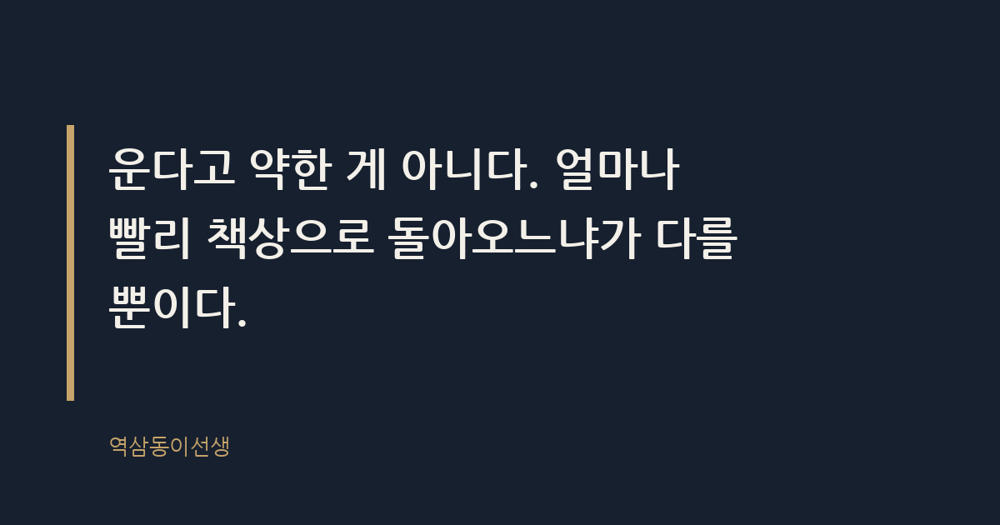

주제 회사에서 우는 날, 어떻게 버티는가 (evergreen / office)
제목 후보
메타 설명 회사에서 울어버린 날, 그 뒤 30분을 어떻게 넘기는지가 진짜 관건이다. 체크리스트와 함께 구조적인 이유까지 짚는다.
라벨 직장생활, 회사생활, 직장인고민, 번아웃, 감정노동, 멘탈관리, 회사에서울었을때, 회사에서우는날, 직장인눈물, 퇴근길눈물
실용 자산 체크리스트 — '버티는 법'이라는 실행형 검색 의도가 있어, 당장 따라 할 수 있는 순서형 체크리스트를 본문 중반에 배치함
발행 전 팩트체크
이미지 (Blogger 편집기에 드래그해 넣으세요)
도입부 사진 · ⓒ StartupStockPhotos / Pexels


화장실 맨 끝 칸에 들어가 변기 뚜껑을 닫고 앉아 숫자를 센 적이 있다. 셋, 넷, 다섯… 백까지 세면 눈이 가라앉는다는 걸 그때 알았다. 임원 회의에서 숫자 하나 때문에 공개적으로 깨지고 나온 직후였다. 화장실 밖으로 나가면 다시 아무 일도 없었던 사람처럼 앉아야 했다. 문을 열고 거울을 보는 그 몇 초가, 회사 생활에서 가장 길게 느껴지는 시간이었다.
회사에서 우는 날은 반드시 온다. 신입이든 임원이든 예외가 없다. 다만 중요한 건 울지 않는 법이 아니라, 운 다음 30분을 어떻게 넘기느냐다. 그 30분을 어떻게 넘기느냐에 따라 그날 하루 전체가 결정된다.
회사에서 우는 날이란 감정이 아니라 신체가 먼저 반응하는 날이다. 서러워서 눈물이 나는 게 아니라, 참을 수 있는 임계치를 몸이 먼저 넘겨버리는 것이다. 밤새 보고서를 고치고 아침 회의에서 한마디 더 들으면, 그 순간 눈물이 터지는 이유는 감정은 참을 수 있어도 누적된 피로는 참아지지 않기 때문이다.
써니가 초등학교 시절 시험지를 들고 울었던 날이 기억난다. 틀린 문제 때문이 아니라, 그 전날 늦게까지 공부하느라 지쳐 있었기 때문이었다. 어른도 다르지 않다. 회사에서 터지는 눈물의 8할은 그날의 사건이 아니라 그 전주의 누적분이다. 한 주 내내 쌓인 피로가 하필 그 순간 둑을 넘는 것뿐이다.
신기한 건, 터지는 타이밍이 꼭 가장 바쁜 날이 아니라는 점이다. 오히려 고비를 넘기고 한숨 돌릴 때, 긴장이 풀리는 순간에 터진다. 큰 프로젝트를 끝내고 회식 자리에서 갑자기 눈물이 핑 돈다는 후배를 여럿 봤다. 몸이 "이제 괜찮다"고 신호를 주는 순간이 역설적으로 가장 위험한 순간이다. 끝까지 버티던 둑이 안도하는 순간 무너지는 것과 비슷하다.
구인구직 플랫폼들이 종종 '직장인 울음'을 주제로 설문을 돌린다. 조사마다 수치는 조금씩 다르지만, 절반이 넘는 직장인이 회사 안에서 울어본 경험이 있다고 답한 것으로 알려졌다. 울음의 장소로 가장 많이 꼽히는 곳은 화장실이고, 그다음이 비상계단이다. 회의실에서 운다고 답한 사람은 드물다. 다들 '들키지 않을 곳'을 본능적으로 찾는다는 뜻이다.
흥미로운 건 우는 이유의 1위가 '업무 압박'이 아니라 '상사나 동료와의 갈등'이라는 점이다. 일 자체보다 사람 때문에 무너지는 경우가 더 많다. 숫자보다 말 한마디가 더 오래 남는다는 걸, 회사에 있어본 사람이라면 다 안다.
신입 때는 화장실만 갈 줄 알았는데, 연차가 쌓이면 장소도 세분화된다. 비상계단은 소리를 숨기기엔 좋지만 누가 문을 열고 올라올지 몰라 늘 긴장해야 한다. 지하주차장 차 안은 완전한 밀폐 공간이라 가장 안전하지만, 시동을 걸고 라디오 볼륨을 올려야 한다는 번거로움이 있다. 옥상은 바람이 눈물 자국을 빨리 말려주지만, 흡연 구역과 겹치는 회사가 많아 의외로 사람이 많다.
한 선배는 퇴근 후 지하철 막차 칸, 사람 없는 쪽 구석 자리를 자신의 '공식 울음 장소'로 삼았다고 했다. 회사 안에서는 절대 울지 않는다는 원칙을 세운 대신, 퇴근길 지하철에서 이어폰을 끼고 창밖을 보며 운다는 것이다. 장소를 회사 밖으로 옮긴 것뿐인데, 그 선배는 그게 자기 나름의 생존 전략이었다고 말했다. 어디서 울든, 중요한 건 그 공간을 스스로 선택했다는 감각이다. 떠밀려 우는 것과 알아서 피신해 우는 것은 회복 속도가 다르다.
직급이 올라가면 눈물이 사라진다고 생각하는 사람이 많다. 틀렸다. 임원들도 운다. 다만 장소가 더 은밀해지고, 시간이 더 짧아질 뿐이다. 한 상무는 중요한 임원 인사에서 밀려난 날, 개인 집무실 블라인드를 전부 내리고 10분 동안 아무도 들이지 말라고 비서에게 일러둔 적이 있다. 10분 뒤 그는 평소와 똑같은 표정으로 회의실에 들어갔다. 그날 회의에 참석한 사람 중 그 10분을 눈치챈 사람은 없었다.
직급이 높아질수록 우는 이유도 바뀐다. 신입은 억울함 때문에 울고, 임원은 무력감 때문에 운다. 아무리 애써도 조직의 방향을 바꿀 수 없다는 걸 깨닫는 순간, 눈물의 결이 달라진다. 자리가 올라갈수록 울 곳은 줄어들고, 대신 혼자 있을 수 있는 권한은 늘어난다. 그 권한을 어떻게 쓰느냐가, 결국 버티는 사람과 무너지는 사람을 가른다.
회의실 밖과 안의 공기는 다르다. 임원급 남자 직원이 언성을 높이면 '추진력 있다'는 평가가 붙는다. 반대로 신입 여직원이 눈물을 보이면 '멘탈이 약하다'는 말이 돌기 시작한다. 같은 감정의 폭발인데 해석이 이렇게 갈린다. 이 이중잣대는 바뀐다고 몇 번이고 들었지만, 현장에서는 여전히 끈질기게 남아 있다.
그래서 많은 사람들이 눈물을 참는 대신 '숨기는 기술'을 먼저 배운다. 화장실에서 5분, 비상계단에서 3분, 그걸로 얼굴을 정리하고 돌아온다. 잘못된 처세라고 비난하긴 쉽지만, 그 순간 그들에게 필요한 건 평가가 아니라 생존이었다.
한번은 신입이 회의 중 눈물을 보인 뒤, 그 사람의 그 해 고과가 유독 낮게 나온 걸 본 적이 있다. 업무 실수는 없었다. 그저 "감정 기복이 있다"는 평가 한 줄이 따라붙었을 뿐이다. 반면 비슷한 시기 다른 팀 과장은 책상을 쾅 치며 언성을 높였는데도 "소신 있다"는 평가를 받았다. 이 장면을 지켜본 뒤로, 눈물을 들키지 않는 것도 회사에서는 일종의 업무 능력이라는 생각을 하게 됐다. 억울하지만 사실이다.
회의실이나 화장실에서 감정이 터졌을 때, 바로 자리로 돌아가지 않는다. 아래 순서를 머릿속에 넣어두면 그날 하루를 조금 더 수월하게 넘길 수 있다.
눈물을 참고 책상에 앉았다고 일이 잘 되는 건 아니다. 오히려 그 직후 쓴 메일이나 보고서에서 평소라면 하지 않을 실수가 튀어나온다. 숫자를 바꿔 넣거나, 수신인을 잘못 지정하거나, 문장을 끝맺지 못하고 보내버리는 식이다. 감정이 가라앉지 않은 상태에서 업무로 복귀하면, 뇌가 두 가지 일을 동시에 처리하느라 둘 다 어설퍼진다.
그래서 중요한 건 '울었다는 사실을 숨기는 것'이 아니라 '중요한 결정은 그날 미루는 것'이다. 메일 발송 버튼을 누르기 전에 임시저장을 해두고 10분 뒤 다시 읽는 것만으로도 실수가 눈에 띄게 줄어든다. 결재가 걸린 문서라면 하루 미뤄도 되는지부터 확인한다. 급한 줄 알았던 일의 8할은 사실 반나절 미뤄도 아무 일도 생기지 않는다.
회사 생활을 길게 한 사람들을 옆에서 지켜보면 의외의 사실을 발견한다. 그들도 운다. 눈물이 마른 게 아니라, 얼마나 빨리 책상으로 돌아오는지가 다를 뿐이다. 10분 걸리던 회복 시간이 3분으로 줄어드는 것, 그게 '단단해진다'는 말의 실체에 가깝다.
운다고 약한 게 아니다. 얼마나 빨리 책상으로 돌아오느냐가 다를 뿐이다. 로댕이 조각한 '생각하는 사람'은 고뇌하는 자세로 굳어 있지만, 실제 회사에서 버티는 사람은 고뇌를 끝내고 다시 손을 움직이는 사람이다. 감정을 없애는 게 아니라, 감정과 업무 사이에 빠르게 선을 긋는 연습을 해온 것뿐이다.
임원이 된 뒤로 회의실에서 눈물을 보이는 후배를 몇 번 마주했다. 예전 같으면 당황해서 말을 돌렸겠지만, 요즘은 그냥 티슈를 건네고 5분 정회를 선언한다. 그 5분 동안 누구도 그 일을 입에 올리지 않는다. 그리고 5분 뒤 회의는 아무 일 없었다는 듯 재개된다. 우는 사람을 민망하게 만들지 않는 것, 그게 선배가 해줄 수 있는 가장 실질적인 배려라는 걸 뒤늦게 배웠다.
회사에서 우는 걸 수치스러워하는 분위기는 여전하다. 하지만 구조적으로 보면 이상한 일이다. 하루 8시간 이상을 보내는 공간에서 감정이 전혀 흔들리지 않는 게 오히려 비정상이다. 감정이 없는 조직은 효율적인 게 아니라 병든 조직이다.
씁쓸하면서도 묘하게 위안이 되는 지점이 여기 있다. 화장실 칸막이 안에서 숫자를 세던 그 신입은 몇 년 뒤 누군가의 눈물을 말없이 지켜봐 주는 선배가 되어 있었다. 운 사람을 기억하는 게 아니라, 울고도 돌아온 사람을 기억하는 게 회사라는 곳의 이상한 공평함이다.
Q. 회사 화장실 칸막이 안에서 숫자 세며 눈물 참아본 적, 저만 있는 건 아니죠?